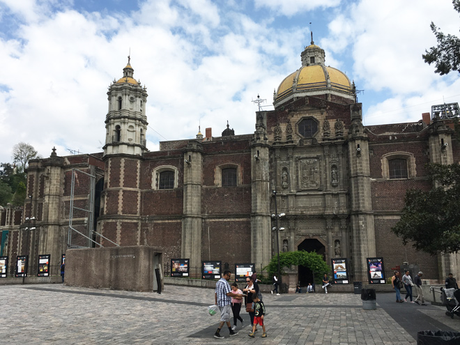
Returning to Mexico City we stopped at the Basílica de Guadelupe which is one of the world’s most visited pilgrimage sites, second only to St. Peter’s Square in Rome. A cult developed around this site after a Christian convert (Juan Diego) claimed in December 1531 that the Virgin Mary appeared before him at Tepeyac Hill and that her image was miraculously emblazoned on his ragged cloak.
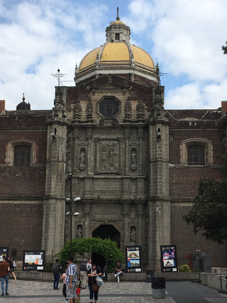
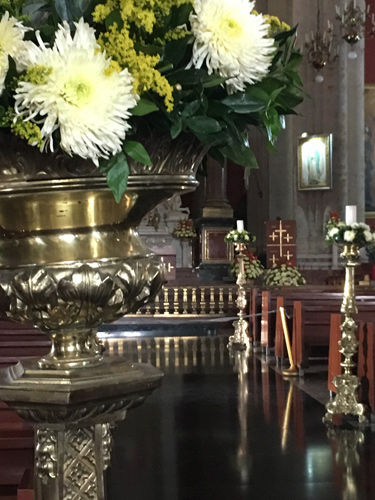
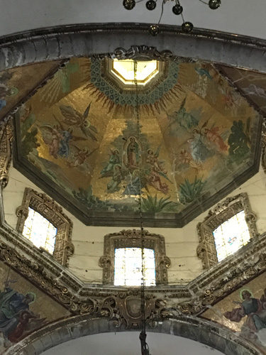
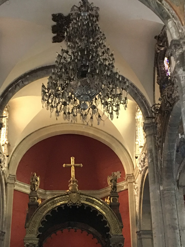
Evidence of the massive earthquake in 2017 was still on show.
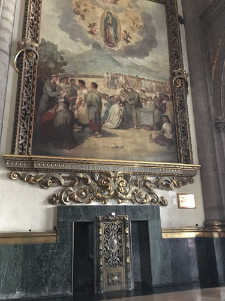
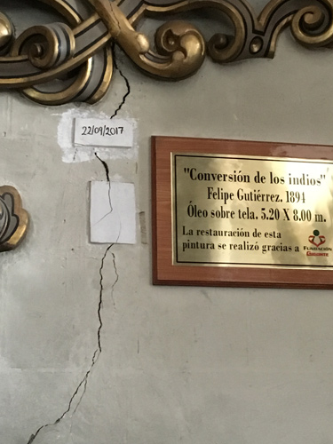
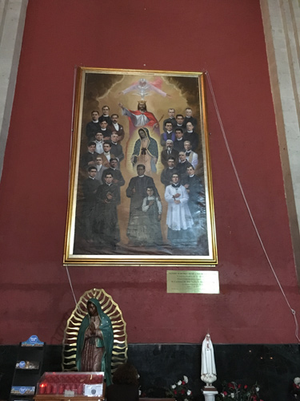
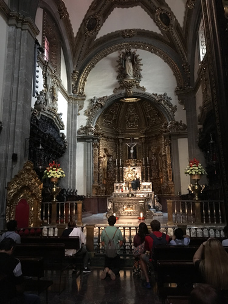
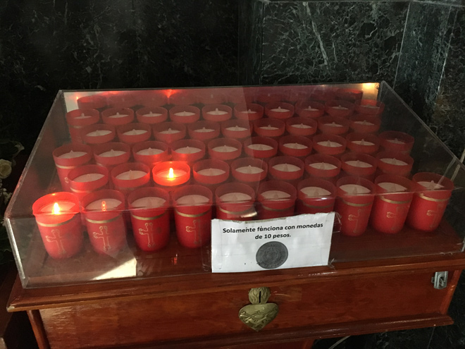
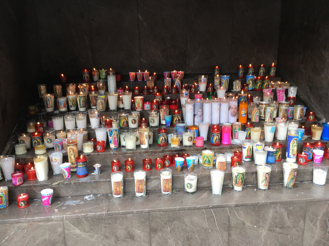
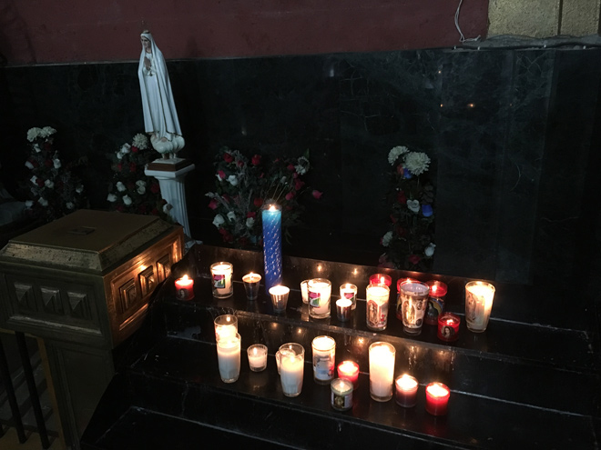
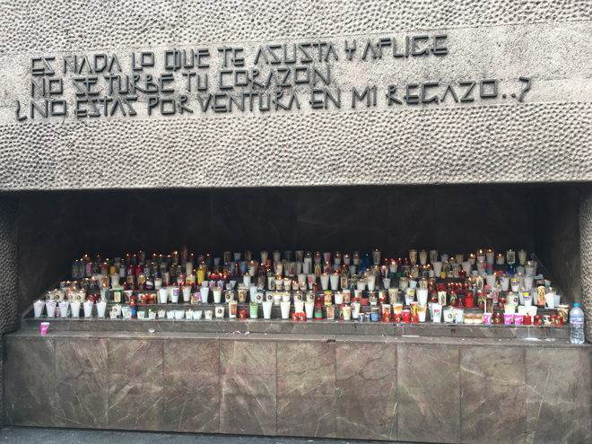
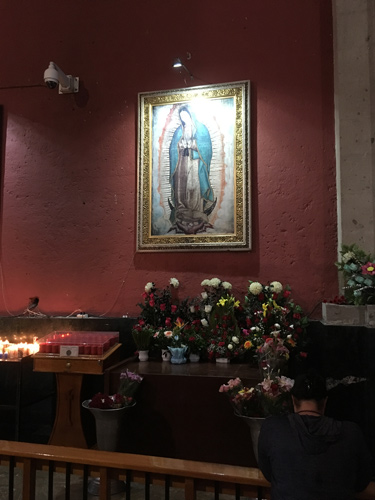
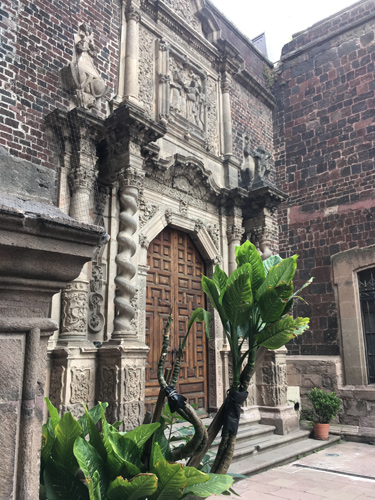
In 1970, as the Antigua Basílica was beginning to sink into the subsoil due to the excessive weight of its bell towers, a new church was built next door by Pedro Ramirez Vásquez (who also designed the Museo Antropologia). This vast, round, open-plan structure with a capacity of 40,000 means that the faithful can get to see the shrine - many being carried below the image by three moving walkways - which is a bizarre sight.
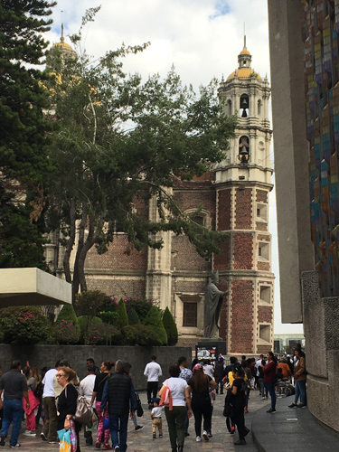
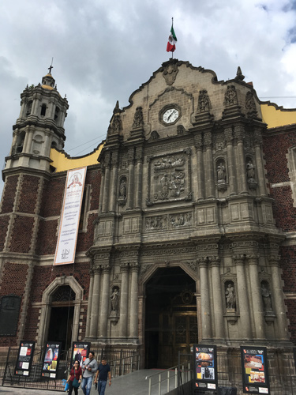
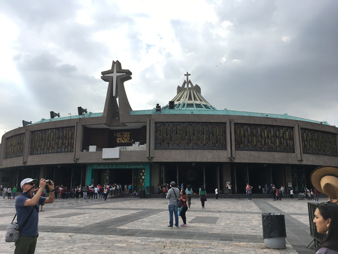
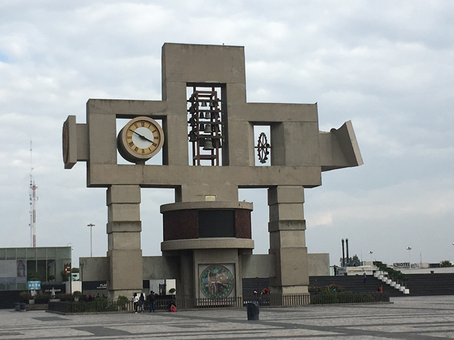
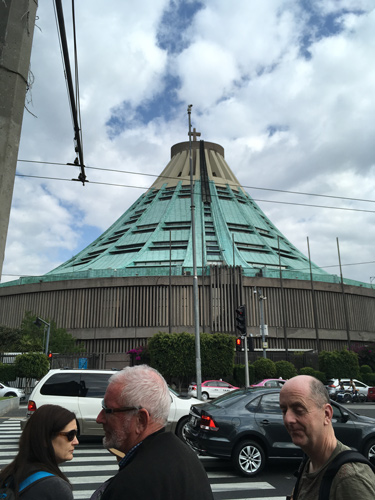
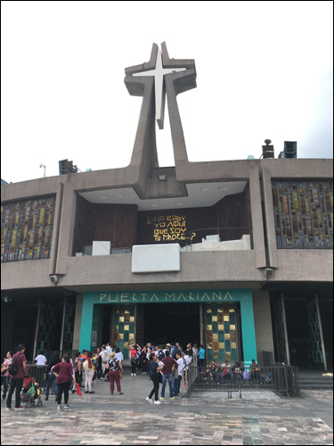
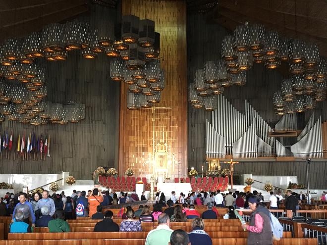
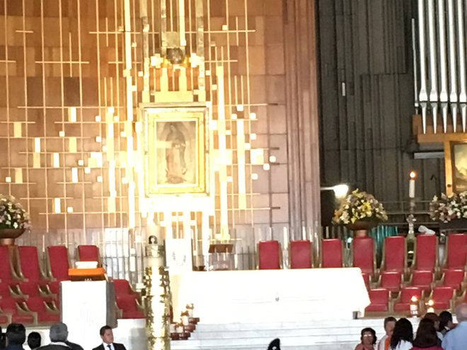
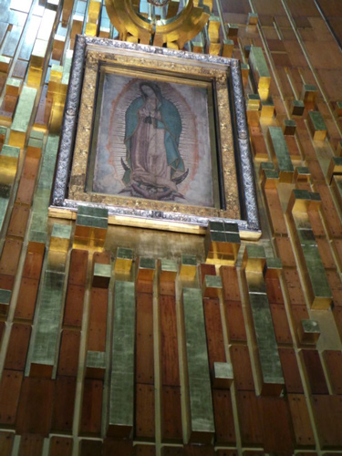
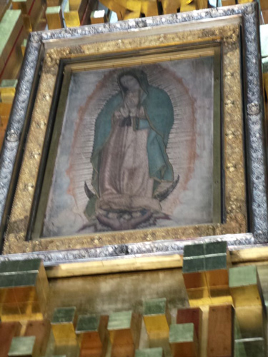
The Basílica is now a place of pilgrimage, worship and, shockingly but not surprisingly, commerce.
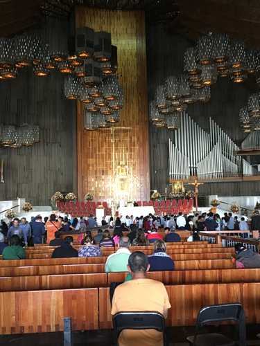
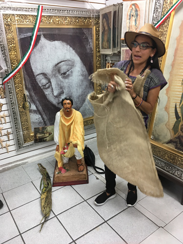
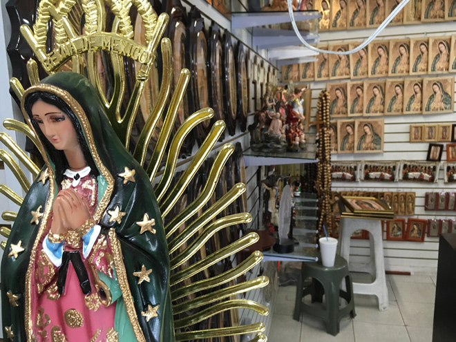